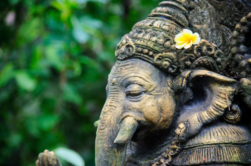
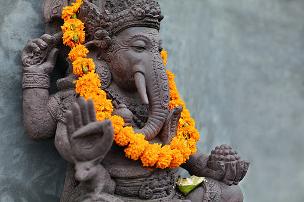
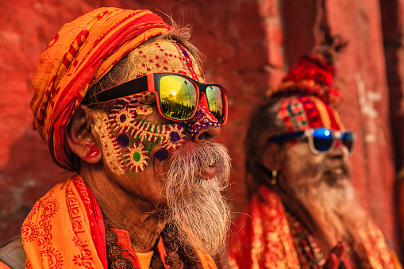
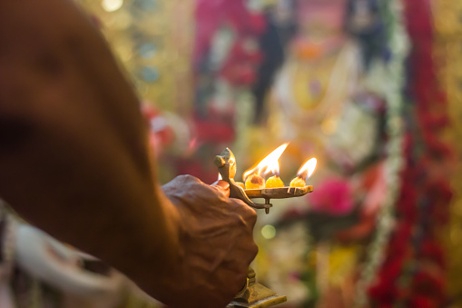

Gallery
There are around two million temples in India, and each year the number gets increased substantially.






India being part of the world’s oldest civilizations is a land of rich history, countless beliefs, traditions and legends surrounding the religions. India takes pride in the country’s rich cultural and religious history as it is the birth land of the traditions of Hinduism, Jainism, Buddhism and Sikhism. India is a land where people of different religious beliefs live in harmony and brotherhood. Hinduism is believed to be the world’s oldest religion. Unlike other religions, Hinduism does not have a founder but is instead a fusion of religions. Various ancient manuscripts and scholars describe the religion as a traditional way of living, a religion whose beginning and ending cannot be traced. The heavenly abode of the Almighty on Earth is referred to as ‘Mandir’ by the Hindus. You will find majestic temples at mostly every corner of the country. Every temple has a unique history and legend attached to it. During the ancient times, the Indian rulers would patronize artists and sculptures for creating exceptional masterpieces in the form of temples under their reign. Tour My India introduces you to some of the most popular and magnificent temples of the country.
There are around two million temples in India, and each year the number gets increased substantially.
| Name | Location | Description |
|---|---|---|
| Badrinath Temple | Uttarakhand | Situated close to the Alaknanda River, the abode of Lord Badrinath is located in the Chamoli district of Uttarakhand. This holy shrine of Lord Vishnu is one of the Char Dhams of Hindu religion. It is also one of the four Chota Char Dham pilgrimage sites (comparatively minor pilgrimage sites). The temple is one of the 108 temples dedicated to Lord Vishnu (Divya Desams), which finds its mention in the works of Tamil saints who existed in the 6th to 9th century. |
| Sun Temple | Odisha | The Sun temple is situated in the small town of Konark situated in the Puri district of Odisha. This marvel of architecture is dedicated to Indian God of Sun, Surya. The temple has been built in the shape of his chariot which is drawn by seven horses. |
| Brihadeeswara Temple | Tamil Nadu | Brihadeeswara Temple is one of the largest South-Indian temples situated in Thanjavur, Tamil Nadu. Also known as Peruvudaiyar Kovil and RajaRajeswaram, this 11th century temple was built by the Chola emperor Raja Raja Chola I. Cholas are known for their admiration for art. |
| Somnath Temple | Gujarat | Somnath Temple is one of the oldest pilgrimage centres in India and finds mention in the ancient books of Shiv Puran, Skanda Purana and Shreemad Bhagvat Gita. Soma refers to ‘Moon God’, thus Somnath means ‘Protector of the Moon God’. |
| Kedarnath Temple | Uttarakhand | Situated in the Himalayan range of Garhwal (Uttarakhand), Kedarnath temple is one of the most sacred shrines in the world. The holy abode of Shiva is believed to have been built by the Pandavas to atone for their sins during Mahabharata |
| Sanchi Stupa | Madhya Pradesh | Surrounded by the ruins of smaller stupas and monasteries, Sanchi Stupa is an architectural marvel in Sanchi, believed to house the relics of Lord Buddha. Also known as the Great Stupa, this famous pilgrimage site in India was built by the Indian Emperor Ashoka, the Great in the 3rd century BC. |
| Ramanathaswamy Temple | Tamil Nadu | Rameswaram is a small island town in Tamil Nadu known for being one of the pious Char Dhams of the Hindus. As per the legend, Lord Rama with his wife Sita landed on the shore of this island after defeating the demon king, Ravana who was a brahmin. |
| Vaishno Devi Temple | Jammu and Kahsmir | One of the most holy sites for Hindu pilgrims, Vaishno Devi Temple is nestled on the Trikuta mountain in Jammu & Kashmir. As per the legend, Vaishno Devi under the disguise of a young girl, Vaishnavi was being chased by a black magician, Bhairo Nath |
| Siddhivinayak Temple | Maharashtra | Located in Prabhadevi, Mumbai, Siddhivinayak Temple is one of the eight Ganesha Temples in Maharashtra. It is also one of the richest temples in India. Lord Ganesha is the supreme deity of the temple who is always the first one to be worshipped before commencing something new in life. |
| Gangotri Temple | Uttarakhand | Nestled amidst the Himalayan range of Uttarkashi district in Uttarakhand, Gangotri Temple is part of the Chota Char Dham Yatra. This temple holds great importance due to its glorifying history. As per the legends, King Bhagirath performed a rigorous penance for thousand long years in order to please Mother Ganga to come down to Earth from heaven to release his ancestors from a curse. Pleased with his sincere devotion, Mother Ganga agreed to come down to Earth. |
| Golden Temple | Punjab | Sri Harmandir Sahib, also known as Darbar Sahib or Golden temple is the most pious site of pilgrimage in Amritsar, Punjab for people who follow Sikhism. The temple is built on the values of universal brotherhood and equality. |
Please send any comment , questions or feedback with the form below.